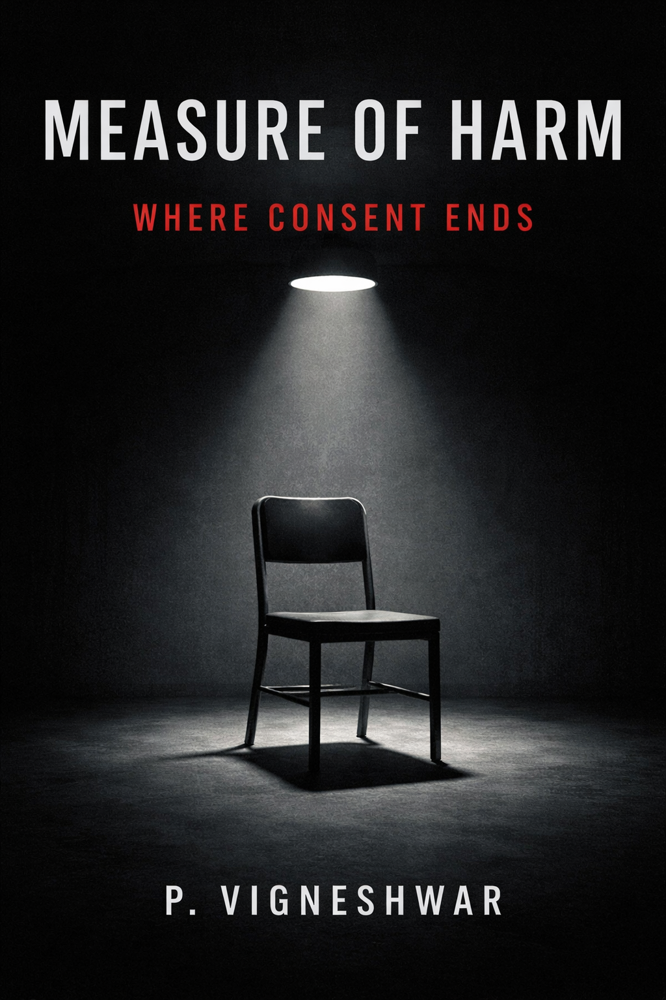

Where We Could Not Touch
Soft Sci-Fi Romance
"The tragedy was never that we loved each other. The tragedy was that love was the only thing we had."Have a Peek into this World →
Soft Sci-Fi Romance
"The tragedy was never that we loved each other. The tragedy was that love was the only thing we had."Have a Peek into this World →
Psychological Thriller
"Justice asks what happened. Morality asks what should have happened."
Have a Peek into this World →
Contemporary Emotional Drama
Some love stories don't end. They simply become memories.
"The saddest goodbyes are not the ones spoken aloud. They're the silent ones that happen every day."
Peek into this World →